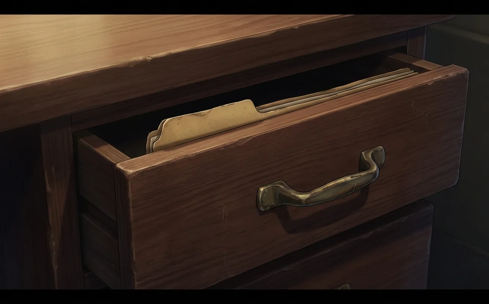
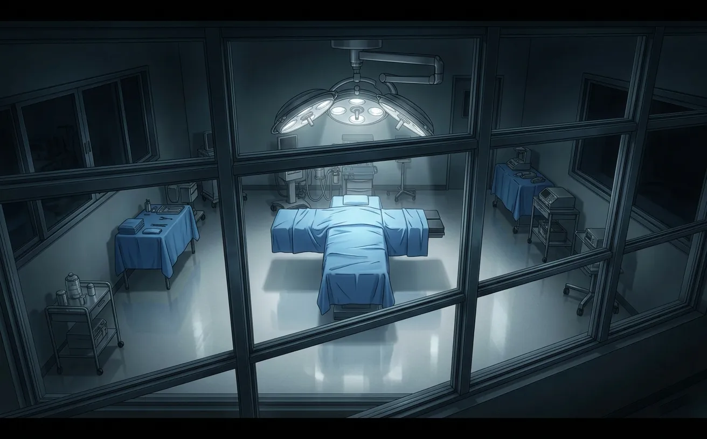
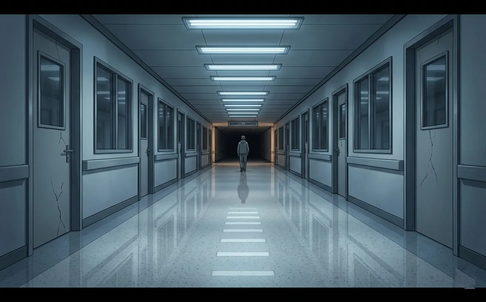
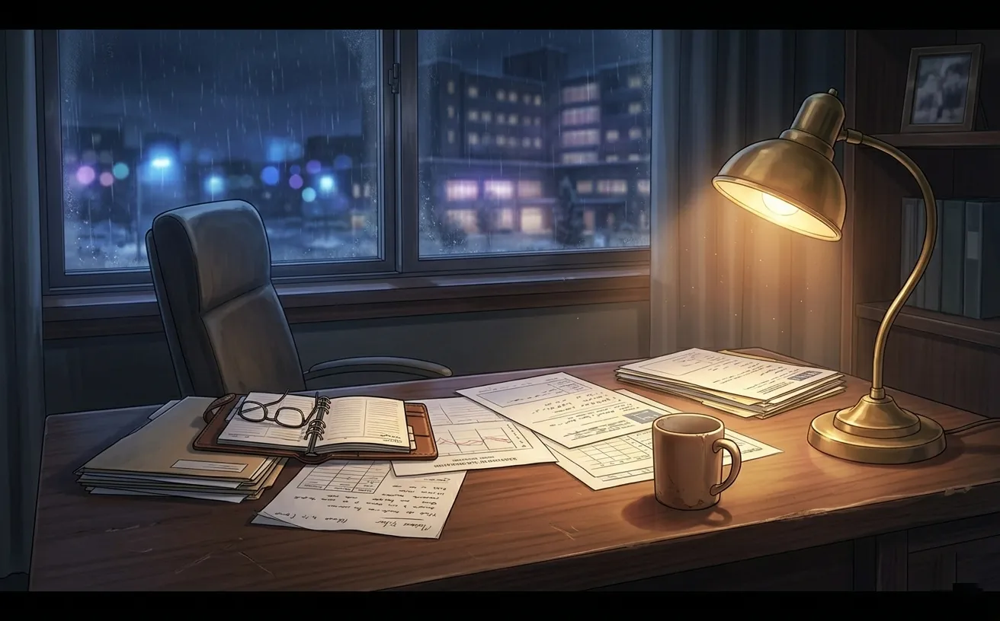

every doctor has a patient they can't forget. zayne's was a child. the surgery worked. the complication didn't wait.
There's a drawer in Zayne's office that he never opens.
It's not locked. Anyone could pull it open. But no one does. The nurses don't touch it. The cleaning staff skip it. It's become an unspoken rule: that drawer stays closed.
Inside is a single manila folder. Worn at the edges. The label on the tab has faded, but you can still read the name if you squint. A child's name. A name that hasn't been spoken in years.
Zayne doesn't talk about that case. Not to other doctors. Not to the MC. Not to anyone. He's the chief of surgery. He's saved hundreds of lives. He's supposed to be above this — the guilt, the second-guessing, the nights spent staring at the ceiling wondering what he could have done differently.
But he's not.
And that drawer is proof.

Figure 1: The drawer that never opens. The file that never leaves.
I've thought a lot about why he keeps it. Not the file — the drawer itself. Why not throw it away? Why not burn it? Why let it sit there, taking up space, reminding him every day of the one that got away?
The answer, I think, is that he's afraid of forgetting.
Not the patient. The lesson. The reminder that he is not God. That his hands, as skilled as they are, cannot save everyone. That sometimes, no matter what you do, it's not enough.
And Zayne — the man who needs to be in control, who needs to be the one who fixes things — that knowledge is the heaviest weight he carries.
The operation was supposed to be routine.
Not easy — nothing in pediatric cardiology is easy. But routine. The kind of surgery Zayne had performed dozens of times before. The kind he could do in his sleep.
The patient was seven years old. A boy. Dark hair, big eyes, a smile that didn't quite reach them. He'd been sick for a long time. Congenital heart defect. Correctable, if caught early. They caught it late.
Zayne had prepared for weeks. Studied the scans. Run simulations. Consulted with specialists across the country. He knew this case inside and out. He had to. The boy's parents were terrified, and someone had to be calm.
The mother had held Zayne's hand before the surgery. Squeezed it. Said, "He's all I have."
Zayne didn't flinch. He told her he would do everything he could. He meant it. He always meant it. But that morning, those words felt heavier than usual.
Because he knew the statistics. He knew the risks. And he knew that if something went wrong, it wouldn't just be a patient he lost. It would be a mother's entire world.
The surgery itself went perfectly.
Six hours. Steady hands. Every incision precise. Every suture in place. The heart, when they closed him up, was beating stronger than it had in years. Zayne allowed himself a moment of relief. He'd done it. The boy would live.

Figure 2: The OR after the surgery. The machines beeping steadily. The relief before the fall.
He walked out to the waiting room. Told the parents the surgery was a success. The mother cried. The father shook his hand. Zayne smiled. The kind of smile he reserves for moments like this — genuine, but brief.
He went home. Slept. Came back the next morning.
The boy was stable. The boy was recovering. The boy was going to be fine.
Or so he thought.
It happened on the third day.
Zayne was in his office, reviewing charts. A nurse knocked. Her face was pale. "Dr. Zayne — the boy. He's crashing."
Zayne didn't run. Doctors don't run. But he moved faster than he had in years.
The boy was in arrest. His heart, the one they had fixed, had stopped. No warning. No signs. Just... stopped.
Zayne worked on him for thirty minutes. Chest compressions. Medications. Everything in his arsenal. He didn't stop. He couldn't stop. If he stopped, that meant giving up. And Zayne doesn't give up.
But the heart didn't restart.
Thirty minutes. That's how long it took for the boy to die. Thirty minutes of Zayne's hands pressing down on a chest that was already cold. Thirty minutes of hoping against hope.
The complication was a clot. Microscopic. Undetectable. It had traveled from the surgical site to the brain. By the time anyone noticed, it was too late.
He doesn't remember telling the parents. The memory is a blur of tears and apologies and words that felt meaningless. He remembers the mother's face. The way she looked at him — not with anger, but with something worse. With understanding.
She knew he had tried. She knew he had done everything. And somehow, that made it worse.

Figure 3: The corridor where he walked after. Alone. Always alone.
Afterward, Zayne went to the locker room. Sat on the bench. Stared at his hands. They looked the same. Steady. Capable. But they felt different. Like they had failed him. Like he had failed them.
He didn't cry. Zayne doesn't cry. But he sat there for a long time, in the dark, with the smell of antiseptic and the weight of a life he couldn't save pressing down on his chest.
He went back to work the next day.
That's what doctors do. They go back. There are other patients waiting. Other families hoping. The world doesn't stop for grief, and neither can he.
But something had changed.
Before that case, Zayne had believed — not arrogantly, but quietly — that he could save anyone. He was the best. He knew it. His colleagues knew it. His patients knew it.
After, he knew better. He could save most people. Not everyone. There was a difference, and that difference was a seven-year-old boy with dark hair and a smile that didn't reach his eyes.
He started working more hours. Staying later. Taking on cases that other doctors wouldn't touch. Colleagues told him he was burning out. He told them he was fine.
He wasn't fine.
He stopped eating at his desk. Started skipping meals entirely. Coffee became breakfast, lunch, and dinner. He lost weight. Gained shadows under his eyes. The nurses exchanged worried glances but said nothing.
He never went to therapy. He didn't believe in it. Not for himself. Doctors didn't need therapists. Doctors were the ones who fixed things, not the ones who needed fixing.
But he started keeping the file. The drawer. The reminder.

Figure 4: His desk, where the weight of every patient sits, invisible but heavy.
Some nights, he dreams about the boy. The dreams are always the same. The surgery. The recovery. The moment when the monitors flatline. And Zayne, standing there, helpless, watching the line go straight.
He always wakes up before the flatline. He never sees the moment of death. Just the lead-up. The knowledge of what's coming. The helplessness of watching it happen.
He doesn't tell anyone about the dreams. He doesn't tell anyone about the file. He doesn't tell anyone about the boy.
He just keeps working. Keeps saving. Keeps pretending that the weight isn't there.
But it is. It always is.
Years later, Zayne met the MC.
She wasn't a patient. Not at first. She was just someone who needed help, and he was someone who could give it. He didn't think much of it at the time.
But she started coming back. Not for medical reasons. Just to talk. To sit in his office. To ask him how his day was. To notice when he hadn't eaten.
She was the first person in years who looked at him and didn't see the chief of surgery. Who saw someone tired. Someone carrying something heavy. Someone who needed help.
One night, late, she was sitting in his office while he finished charts. The drawer was visible. She didn't ask about it. But she looked at it. Just for a second.
Zayne almost told her. Almost opened the drawer. Almost showed her the file.
But he didn't. He couldn't. Because once he started talking about it, he might not be able to stop. And he wasn't sure he was ready to let anyone carry that weight with him.
He hasn't opened the drawer. Not yet. Maybe someday. Maybe when the weight feels lighter. Maybe when he's ready to let someone in.
But for now, it stays closed. The file stays inside. And Zayne keeps saving people — one patient at a time — hoping that someday, the one he couldn't save won't be the only one he remembers.
Figure 5: The window he stares out of, when the memories get too loud.
Zayne is not the kind of man who talks about his feelings. He's not the kind of man who asks for help. He's the kind of man who carries the weight alone, because he thinks that's what he's supposed to do.
But even the strongest people need someone to lean on. And maybe, someday, he'll let someone be that for him.
"I'm a doctor. I save lives. That's what I do. But some lives — you never stop trying to save."